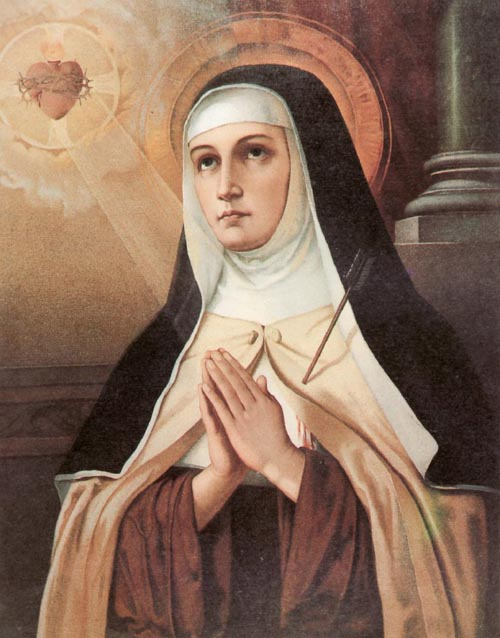

„Hoće li tko za mnom, neka se odreče samoga sebe, neka uzme svoj križ i neka ide za mnom.” (Mt 16,24)

Sveta Terezija Avilska, rođena 1515. godine u plemićkoj španjolskoj obitelji, bila je jedna od najfascinantnijih ličnosti katoličke obnove. Unatoč početnim unutarnjim borbama i teškom zdravstvenom stanju koje ju je u mladosti dovelo do ruba smrti i četverodnevne ukočenosti, Terezija je postala energična reformatorica karmelićanskog reda. Putovala je cijelom Španjolskom osnivajući samostane, a njezina književna djela poput Zamka duše i Puta savršenosti ubrajaju se u same vrhunce svjetske mistične književnosti i teologije.
Njezina smrt 1582. godine ostala je zapamćena po povijesnom kuriozitetu – preminula je upravo u noći kada je stupila na snagu gregorijanska reforma kalendara, pa je s 4. listopada datum odmah pomaknut na 15. listopada. Papa Pavao VI. proglasio ju je 1970. godine prvom ženom naučiteljicom Crkve, priznajući time njezinu iznimnu doktrinarnu važnost. Danas se časti kao zaštitnica Španjolske, bolesnika i grada Požege, a njezina se duhovnost temelji na prisnom, prijateljskom odnosu s Bogom kroz unutarnju molitvu.
Posebnu pažnju javnosti privlači njezino neraspadnuto tijelo, koje je i nakon više od 440 godina, prilikom posljednjeg otvaranja sarkofaga 2024. godine, pronađeno u savršenom stanju. Znanstvena istraživanja potvrdila su očuvanost mišića i kože bez tragova mumifikacije, ali su otkrila i fizičke patnje svetice, poput teškog artritisa i zakrivljenosti kralježnice. Njezin se utjecaj osjeti i danas kroz umjetnost i glazbu, dok njezino geslo "Samo je Bog dostatan" ostaje trajna inspiracija vjernicima širom svijeta.